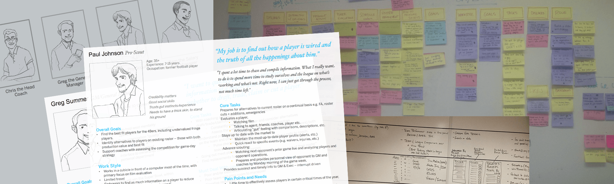
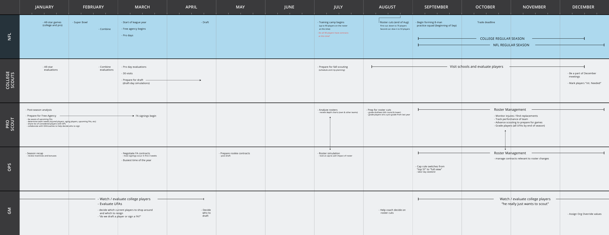
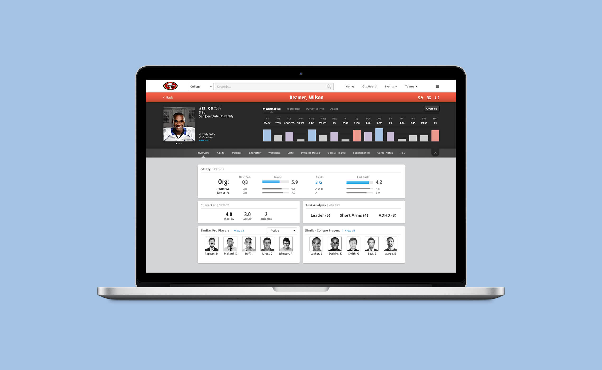
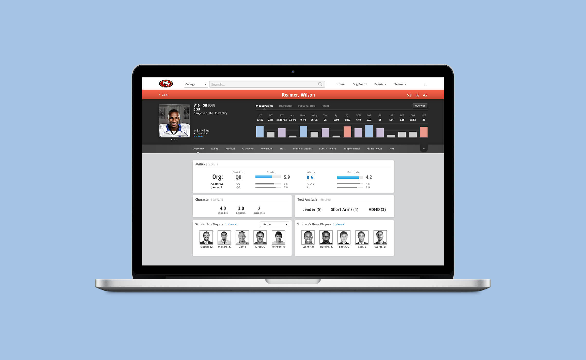
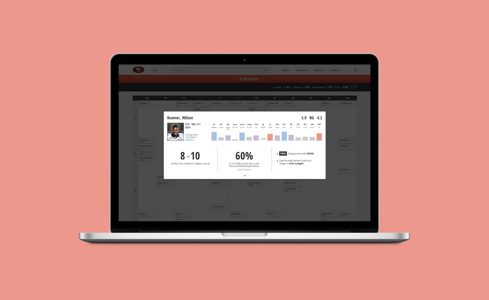

SAP Scouting
Role
Interaction & Visual Design
Overview
SAP Scouting is a software application that empowers football franchises in the NFL to evaluate, identify and acquire the talent that fuels their teams' on-field success. By spending less time searching for, collecting, and entering data, teams can spend more time actually watching and evaluating players. SAP Scouting is currently helping the San Francisco 49ers and Washington Redskins with their drafting and roster decisions. The application won the People's Choice Award and was a finalist in the Optimizing category at the 2014 IXDA Interaction Awards.

Problem
Scouting can be a very tedious and time-consuming process. Scouts must keep track of hundreds of players at a time and be able to make confident and educated decisions that can have huge impacts on their respective NFL teams. Currently, scouts use out-dated (see: prehistoric) software, alongside never-ending Excel sheets and binders piled ceiling-high. Our goal was to reinvent this process, while at the same time, be able to provide new information and insights that were previously unavailable or nearly impossible to discover.
Process
We had the rare pleasure of having direct access to our users throughout the entire design process. As co-innovators, the 49ers were willing to spend countless hours with us to brainstorm, ideate, and validate. This proved to be invaluable, especially since we had no prior experience in the industry, except for one person who's been a 49er fan their entire life (yours truly)...
 We created personas and storyboards which lead to the detailed user stories that we would design for. With a complicated process like scouting, it was often hard to keep the scope from getting out of hand, but we felt it was important to successfully implement the key features first.
We created personas and storyboards which lead to the detailed user stories that we would design for. With a complicated process like scouting, it was often hard to keep the scope from getting out of hand, but we felt it was important to successfully implement the key features first.
We created personas and storyboards which lead to the detailed user stories that we would design for. With a complicated process like scouting, it was often hard to keep the scope from getting out of hand, but we felt it was important to successfully implement the key features first.


Search & Compare
Comparing players is easily the most important aspect of a scout's job, so we spent a great deal of time trying to find the best solution to allow for constant, in-context comparisons. We ended up combining search and compare features so that scouts could easily compare both individuals and groups of players. By default, search results show the overview of players. This includes important personal information, grades and alerts given by scouts, as well as key measurable information such as height, weight, and speed. Each players' measurable data is also shown in a graph that places them in a percentile of the rest of the players in that position.
 

Draft Board
The draft is undoubtedly the most important event when it comes to NFL scouting. Your picks in the draft can literally define the franchise for years to come, both positively and negatively. The draft board within SAP Scouting aims to help teams make the best possible decisions on that fateful day in April. The board is divided into the different positions and the different rounds of the draft, and players are then placed according to the grades given by the scouts—the higher the grade, the earlier the round. We automated this process by defining an algorithm that would assign players to different spots on the board according to their grade. This allows the scouts to see a live and dynamic representation of their draft plan every step of the way. Furthermore, they can drill into individual players to discover more key insights regarding their current location on the board. We compare their placement to past players and past drafts to help find any important trends.
